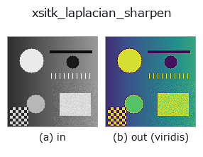

extra op• Data kinds: image → image
• Call: fullseye.apply(img, "xsitk_laplacian_sharpen", a=0.5, b=0.5) (2-D model = एक image + दो scalar knobs a,b∈[0,1])

*Figure synthetic 128×128 input पर सच में चलाकर मिला output है। बाईं ओर input, दाईं ओर output। Point clouds ऊपर से देखे गए scatter के रूप में (brightness = z), 1-D series line के रूप में, volumes z दिशा में maximum-intensity projection के रूप में, videos बीच के frame के रूप में, complex images amplitude के रूप में, और जो return values चित्र नहीं बन सकते वे स्वयं values के रूप में दिखाए जाते हैं।*
*Output viridis जैसे pseudo-colour में है (गहरा बैंगनी = कम, पीला = अधिक), ताकि distance, phase, orientation, depth जैसे "मात्राओं के field" पढ़े जा सकें।*
*Knob a output नहीं बदलता (मापा गया: 0.1 / 0.5 / 0.9 पर एक जैसा)।*
*Knob b output नहीं बदलता (मापा गया: 0.1 / 0.5 / 0.9 पर एक जैसा)।*
दूसरी images पर भी (synthetic scene / photo / coins। ऊपर की row में inputs, नीचे की row में उनके outputs। Knobs default पर):
▸ xsitk_laplacian_sharpen: दूसरी images पर output (docs site)
*चौथा column colour (H,W,3) input है। यह op channels को पार किए बिना colour संभालता है (colour channel को तीसरे spatial axis की तरह convolve नहीं करता)।*
Laplacian sharpening (SimpleITK LaplacianSharpening)। Image में से Laplacian (क्रम 2 का derivative) घटाकर edges उभारने वाला unsharp mask का एक प्रकार। परिणाम को min-max normalise करके लौटाता है।
कोई parameter नहीं है, a, b उपयोग नहीं होते।
Border handling: किनारे के pixel की नकल की जाती है (nearest neighbour) (मापा गया; tools/impl2/border_probe.py)।
Values की तुलना (मापा गया): output को उसी image के अधिकतम से normalise किया गया है (output का अधिकतम हमेशा 1.0 होता है, और input को किसी constant से गुणा करने पर भी output नहीं बदलता)। इसलिए अलग-अलग images के values की तुलना नहीं की जा सकती — समान ताकत वाले feature का value भी इस पर निर्भर करता है कि उस image में सबसे मज़बूत feature कौन-सा है। केवल कमज़ोर features वाली image में noise 1.0 तक उठ जाता है। images के बीच तुलना करनी हो तो किसी साझा reference से फिर से भाग दें।
• gallery2d_color_artistic family guide
• Sample data catalog (DL URL / license) — 2-D के लिए skimage.data (BSD/public) + synthetic, 3-D के लिए real data sources (Stanford/PDS आदि) के DL URL।
• Operators का स्रोत और संदर्भ — इस op family के मूल research/methods के स्रोत।
• Algorithm का मानक स्रोत (लेखक, वर्ष) और उपयोग ऊपर की family usage guide में दिए गए हैं।
नीचे का program सच में चलता है, यह जाँचा गया है (figure वाला ही input)। Studio की help में यह block buttons बन जाता है, जिनसे इसे वहीं load करके चलाया जा सकता है।
xsitk_laplacian_sharpen 0.50 0.50
▸ यह pipeline load करें · Load करके चलाएँ
• gallery2d_color_artistic — py -3.11 examples/gallery2d_color_artistic.py
image को input के रूप में लेते हैं)identity · gaussian · mean_box · bilateral · unsharp · median · min_filter · max_filter
extra)xsitk_curvature_flow · xsitk_minmax_curv_flow · xsitk_curv_aniso_diff · xsitk_grayscale_fillhole · xsitk_grayscale_grindpeak · xsitk_opening_by_recon · xsitk_closing_by_recon · xsitk_signed_maurer_dist
*Provenance: ops.py — 2D operator registry. यह per-op note tools/opdocs.py md से अपने-आप generate होता है (हाथ से edit न करें)।*
© 2026 Kazufumi Furuse — Fullseye operator documentation. Licensed under Apache-2.0.